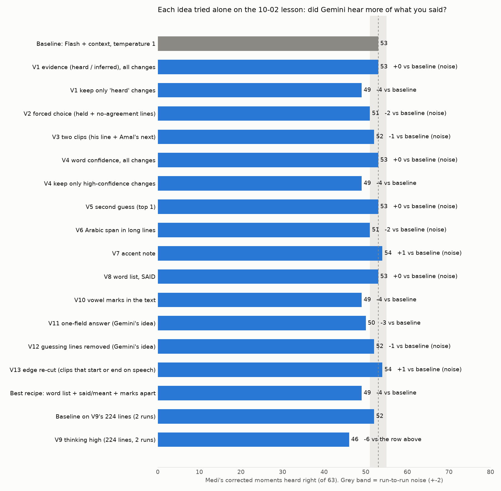
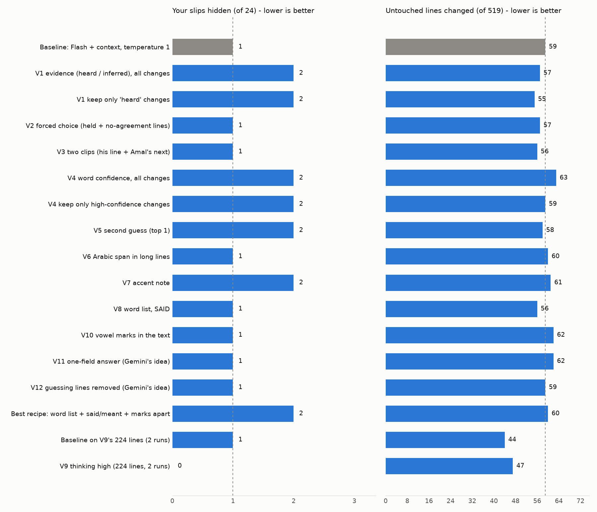
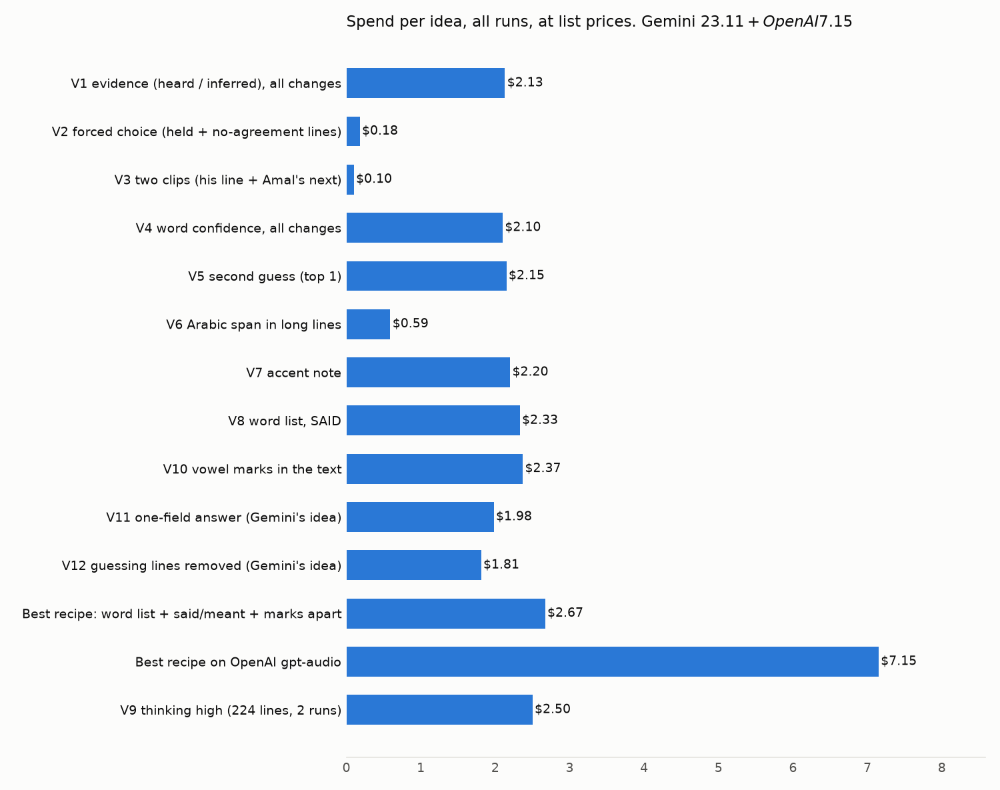

Speech-engine benchmark on Medi's own corrections (lesson 2026-10-02)
Gemini 3.8 Flash, listening to your microphone with the lesson around it, heard 53 of your 63 corrected moments on 10-02; today's engine (ElevenLabs) heard 4, and no plain transcriber got past 21.
The short version
| Heard right (of 63) | Your slips hidden (of 24) | Untouched lines with a word changed (of 519) | Cost for the lesson (3 runs) | |
|---|---|---|---|---|
| Gemini 3.8 Flash + context, temperature 1 | 53 | 1 | 59 | $2.02 |
| Gemini 3.8 Flash + context, temperature 0 | 51 | 2 | 62 | $2.10 |
| Gemini 3.8 Flash, context before the line only | 49 | 1 | 61 | $1.75 |
| OpenAI gpt-audio-1.5 + context | 24 | 11 | 275 | $5.60 |
| Deepgram nova-3 Arabic (best plain transcriber) | 21 | 1 | 191 | $0.83 |
| ElevenLabs, today's transcript | 4 | 1 | 0 | - |
- "Heard right" = the word you said is in the engine's text, in 2 of 3 runs.
- "Slip hidden" = the engine wrote Amal's correct word where you made a mistake (the worst fault).
- "Word changed" = on a line you did not correct, the engine wrote a different word (a change of alphabet alone is not counted).
- Answer key frozen before any engine ran: truth
4a26fdb66bac0acd, clips8a7457bdca0e5a30, promptsbd1a29d409660d4f.
What the test found
- Gemini Flash is the only engine that fixes most of it: 27 of 32 real mishearings, 26 of 31 lines where your Arabic was written in English letters.
- It does not need to peek: with only the text BEFORE your line (so Amal's later correction cannot leak), it still hears 49 of 63.
- It is not free of harm: on about 60 of 519 lines you left alone it changes a word. Some are real fixes you did not flag ("Money is..." -> "مصاري is..."); some pull you toward Amal (شجاع -> متشجع, سفر -> سفرة).
- Temperature barely matters for Flash: 51 at 0, 53 at 1, about the same hidden slips and changed lines. Temperature = how much randomness the AI uses; 1 is Google's default.
- Temperature matters a lot for Gemini Pro: at 0 it looped in its thinking, 63,000 tokens on 14 of 44 calls, $17.93 for 67 calls. At the default it behaves.
- Gemini Pro is no better than Flash: on the 34 moments it reached, Pro 26, Flash 27. It costs about 7x more and Google caps it at 250 requests a day on your account.
- OpenAI gpt-audio "fixes" you: it hid 11 of 24 slips (wrote صحيت for your سمعت). Unusable for scoring.
- Plain transcribers fail two ways: forced to Arabic they write your English in Arabic letters (Deepgram ar, Cohere, Audar: 190-390 lines changed); left on auto they write your Arabic as English (Deepgram multi: 3 of 63).
- Short clips make plain engines worse: ElevenLabs on single lines wrote 69 lines in a wrong alphabet; on the whole file, 3.
- ElevenLabs is not repeatable: across the published transcript and two fresh runs of the same file, only 36.5 % of the moments came out the same all three times.
- Vowels: Gemini Flash and gpt-audio both heard your 5ottatet vs Amal's 5attatet (6 of 6 each). Neither heard oowla vs oola (Flash wrote "oola" for both of you; gpt-audio gave no usable answer on your clip). Plain transcribers cannot show a short vowel at all: Arabic script drops it.
Scoreboard B (score closeness) - read with care
- The page's Words % is built from stored word events and the AI readers' rows; neither re-reads a new transcript. A true re-score needs the 3 AI readers re-run per engine.
- So B here is the part that CAN be recomputed in scratch mode: rule uses (the real counter), plus which published slips and word rows are still visible in the engine's text.
- It cannot see NEW false slips an engine's mishearings would add.
- ElevenLabs-today is near the truth by construction: the page was built from it.
- Gemini Flash lands within 0.2 points on Words and 2.0-2.4 on Grammar.
A - Plain transcribers (audio only)
| Engine | Mode | Heard right (of 63) | Real mishearings fixed (of 32) | English-letter Arabic fixed (of 31) | Slips hidden (of 24) | Lines changed of 519 (words changed, not just the alphabet) | All Arabic words right | Wrong alphabet lines | Same answer 3 of 3 | Runs | Sec / lesson | Cost |
|---|---|---|---|---|---|---|---|---|---|---|---|---|
| Deepgram nova-3 (ar) | whole file | 21 (33.3%) | 10 | 11 | 1 | 244 (words: 191) | 50.0% | 0 | 100.0% | 3 | 109 | $0.83 |
| Cohere transcribe-arabic-07-2026 (local, ar) | per line | 15 (23.8%) | 5 | 10 | 1 | 308 (words: 259) | 42.0% | 0 | 100.0% | 3 | 69 | $0.00 |
| Deepgram nova-3 (ar) | per line | 13 (20.6%) | 4 | 9 | 0 | 375 (words: 329) | 42.7% | 0 | 100.0% | 3 | 302 | $0.43 |
| ElevenLabs Scribe v2 (fresh runs) | whole file | 12 (19.0%) | 7 | 5 | 0 | 33 (words: 22) | 74.3% | 3 | 36.5% | 3 | 15 | $0.47 |
| Audar ASR V1 Turbo (local, auto) | per line | 12 (19.0%) | 6 | 6 | 2 | 305 (words: 262) | 42.2% | 0 | 100.0% | 3 | 888 | $0.00 |
| Audar ASR V1 Turbo (local, forced ar) | per line | 12 (19.0%) | 7 | 5 | 3 | 404 (words: 366) | 47.3% | 0 | 100.0% | 3 | 992 | $0.00 |
| OpenAI gpt-transcribe | per line | 10 (15.9%) | 6 | 4 | 1 | 139 (words: 93) | 28.6% | 9 | 100.0% | 3 | 587 | $0.60 |
| Cohere transcribe-03-2026 (API, ar) | per line | 10 (15.9%) | 2 | 8 | 2 | 432 (words: 389) | 30.3% | 0 | 100.0% | 1 | 2903 | $0.00 |
| Speechmatics ar_en enhanced | whole file | 9 (14.3%) | 5 | 4 | 1 | 138 (words: 97) | 25.2% | 0 | 100.0% | 3 | 100 | $1.28 |
| Speechmatics ar_en enhanced | per line | 8 (12.7%) | 7 | 1 | 2 | 144 (words: 102) | 23.3% | 0 | 100.0% | 3 | 1139 | $0.66 |
| OpenAI gpt-4o-transcribe | per line | 7 (11.1%) | 5 | 2 | 0 | 141 (words: 109) | 25.0% | 31 | 98.4% | 3 | 255 | $0.60 |
| ElevenLabs Scribe v2 (fresh runs) | per line | 7 (11.1%) | 3 | 4 | 0 | 150 (words: 99) | 28.6% | 69 | 88.9% | 3 | 672 | $0.36 |
| ElevenLabs Scribe v2 (today's transcript) | per line | 4 (6.3%) | 4 | 0 | 1 | 0 (words: 0) | 83.3% | 5 | 100.0% | 1 | 0 | $0.00 |
| Deepgram nova-3 (multi) | per line | 3 (4.8%) | 1 | 2 | 0 | 150 (words: 118) | 6.1% | 2 | 100.0% | 3 | 756 | $0.52 |
| Deepgram nova-3 (multi) | whole file | 3 (4.8%) | 1 | 2 | 0 | 151 (words: 125) | 3.9% | 0 | 100.0% | 3 | 65 | $1.00 |
A - Listeners (audio + lesson context)
| Engine | Mode | Heard right (of 63) | Real mishearings fixed (of 32) | English-letter Arabic fixed (of 31) | Slips hidden (of 24) | Lines changed of 519 (words changed, not just the alphabet) | All Arabic words right | Wrong alphabet lines | Same answer 3 of 3 | Runs | Sec / lesson | Cost |
|---|---|---|---|---|---|---|---|---|---|---|---|---|
| Gemini 3.8 Flash + context, temperature 1 | per line | 53 (84.1%) | 27 | 26 | 1 | 96 (words: 59) | 84.5% | 0 | 90.5% | 3 | 198 | $2.02 |
| Gemini 3.8 Flash + context | per line | 51 (81.0%) | 26 | 25 | 2 | 100 (words: 62) | 83.3% | 0 | 87.3% | 3 | 676 | $2.04 |
| Gemini 3.8 Flash, context before only | per line | 49 (77.8%) | 23 | 26 | 1 | 96 (words: 61) | 83.5% | 0 | 84.1% | 3 | 310 | $1.74 |
| OpenAI gpt-audio-1.5 + context | per line | 24 (38.1%) | 14 | 10 | 11 | 310 (words: 275) | 70.1% | 0 | 95.2% | 3 | 560 | $5.47 |
| OpenAI gpt-audio-1.5, context before only | per line | 20 (31.7%) | 10 | 10 | 5 | 289 (words: 248) | 64.1% | 0 | 100.0% | 2 | 393 | $3.26 |
B - score closeness (truth: Words 83.1%, Grammar 93.8%, 21 slips, 240 uses)
| Engine | Mode | Words % | off by | Grammar % | off by | Slips still visible | Uses counted |
|---|---|---|---|---|---|---|---|
| ElevenLabs Scribe v2 (today's transcript) | per line | 83.1 | 0.0 | 95.1 | 1.3 | 17 | 226 |
| Gemini 3.8 Flash + context, temperature 1 | per line | 83.3 | 0.2 | 95.8 | 2.0 | 17 | 264 |
| Gemini 3.8 Flash + context | per line | 83.1 | 0.0 | 96.2 | 2.4 | 16 | 266 |
| ElevenLabs Scribe v2 (fresh runs) | whole file | 81.5 | 1.6 | 95.0 | 1.2 | 16 | 200 |
| Gemini 3.8 Flash, context before only | per line | 85.6 | 2.5 | 95.8 | 2.0 | 15 | 263 |
| OpenAI gpt-4o-transcribe | per line | 81.0 | 2.1 | 97.0 | 3.2 | 5 | 101 |
| Deepgram nova-3 (ar) | whole file | 80.9 | 2.2 | 97.5 | 3.7 | 10 | 203 |
| Deepgram nova-3 (ar) | per line | 81.8 | 1.3 | 98.9 | 5.1 | 8 | 277 |
| OpenAI gpt-audio-1.5, context before only | per line | 84.3 | 1.2 | 99.0 | 5.2 | 10 | 616 |
| OpenAI gpt-audio-1.5 + context | per line | 86.0 | 2.9 | 98.6 | 4.8 | 10 | 508 |
| Cohere transcribe-arabic-07-2026 (local, ar) | per line | 80.3 | 2.8 | 99.0 | 5.2 | 6 | 304 |
| Audar ASR V1 Turbo (local, auto) | per line | 78.6 | 4.5 | 99.0 | 5.2 | 7 | 293 |
| Audar ASR V1 Turbo (local, forced ar) | per line | 77.9 | 5.2 | 98.9 | 5.1 | 12 | 535 |
| Speechmatics ar_en enhanced | whole file | 76.2 | 6.9 | 98.0 | 4.2 | 4 | 101 |
| ElevenLabs Scribe v2 (fresh runs) | per line | 75.0 | 8.1 | 97.1 | 3.3 | 6 | 103 |
| Cohere transcribe-03-2026 (API, ar) | per line | 76.1 | 7.0 | 99.6 | 5.8 | 5 | 496 |
| Speechmatics ar_en enhanced | per line | 72.2 | 10.9 | 97.9 | 4.1 | 4 | 97 |
| OpenAI gpt-transcribe | per line | 70.7 | 12.4 | 97.3 | 3.5 | 8 | 111 |
| Deepgram nova-3 (multi) | whole file | 62.5 | 20.6 | 100.0 | 6.2 | 0 | 36 |
| Deepgram nova-3 (multi) | per line | 50.0 | 33.1 | 100.0 | 6.2 | 1 | 51 |
A by kind of mistake (moments heard right)
| Engine | Mode | el- | foreign-script | kept-slip | latin-arabic | number-time | short-repeat-english | vowel | wrong-arabic-word |
|---|---|---|---|---|---|---|---|---|---|
| Deepgram nova-3 (ar) | whole | 1/1 | 2/4 | 1/3 | 11/31 | 1/8 | 1/1 | 1/3 | 3/12 |
| Cohere transcribe-arabic-07-2026 (local, ar) | line | 1/1 | 0/4 | 1/3 | 10/31 | 0/8 | 1/1 | 0/3 | 2/12 |
| Deepgram nova-3 (ar) | line | 0/1 | 2/4 | 1/3 | 9/31 | 0/8 | 0/1 | 0/3 | 1/12 |
| ElevenLabs Scribe v2 (fresh runs) | whole | 0/1 | 2/4 | 3/3 | 5/31 | 0/8 | 0/1 | 2/3 | 0/12 |
| Audar ASR V1 Turbo (local, auto) | line | 0/1 | 1/4 | 1/3 | 6/31 | 3/8 | 0/1 | 0/3 | 1/12 |
| Audar ASR V1 Turbo (local, forced ar) | line | 0/1 | 0/4 | 1/3 | 5/31 | 4/8 | 0/1 | 1/3 | 1/12 |
| OpenAI gpt-transcribe | line | 0/1 | 1/4 | 1/3 | 4/31 | 1/8 | 0/1 | 0/3 | 3/12 |
| Cohere transcribe-03-2026 (API, ar) | line | 0/1 | 0/4 | 0/3 | 8/31 | 0/8 | 0/1 | 0/3 | 2/12 |
| Speechmatics ar_en enhanced | whole | 0/1 | 0/4 | 0/3 | 4/31 | 1/8 | 0/1 | 0/3 | 4/12 |
| Speechmatics ar_en enhanced | line | 0/1 | 1/4 | 1/3 | 1/31 | 2/8 | 0/1 | 0/3 | 3/12 |
| OpenAI gpt-4o-transcribe | line | 0/1 | 2/4 | 0/3 | 2/31 | 1/8 | 0/1 | 0/3 | 2/12 |
| ElevenLabs Scribe v2 (fresh runs) | line | 0/1 | 2/4 | 0/3 | 4/31 | 0/8 | 0/1 | 1/3 | 0/12 |
| ElevenLabs Scribe v2 (today's transcript) | line | 0/1 | 0/4 | 3/3 | 0/31 | 0/8 | 0/1 | 1/3 | 0/12 |
| Deepgram nova-3 (multi) | line | 0/1 | 0/4 | 0/3 | 2/31 | 0/8 | 0/1 | 0/3 | 1/12 |
| Deepgram nova-3 (multi) | whole | 0/1 | 0/4 | 0/3 | 2/31 | 0/8 | 0/1 | 0/3 | 1/12 |
| Gemini 3.8 Flash + context, temperature 1 | line | 0/1 | 3/4 | 3/3 | 26/31 | 6/8 | 1/1 | 3/3 | 11/12 |
| Gemini 3.8 Flash + context | line | 0/1 | 3/4 | 3/3 | 25/31 | 6/8 | 1/1 | 3/3 | 10/12 |
| Gemini 3.8 Flash, context before only | line | 0/1 | 3/4 | 1/3 | 26/31 | 6/8 | 1/1 | 3/3 | 9/12 |
| OpenAI gpt-audio-1.5 + context | line | 0/1 | 2/4 | 1/3 | 10/31 | 5/8 | 1/1 | 1/3 | 4/12 |
| OpenAI gpt-audio-1.5, context before only | line | 0/1 | 2/4 | 1/3 | 10/31 | 1/8 | 1/1 | 3/3 | 2/12 |
Amal's 6 corrected lines (plain transcribers on her clips)
| Engine | Heard right (of 6) |
|---|---|
| Cohere transcribe-arabic-07-2026 (local, ar) | 1 |
| Deepgram nova-3 (ar) | 0 |
| Audar ASR V1 Turbo (local, auto) | 1 |
| Audar ASR V1 Turbo (local, forced ar) | 1 |
| OpenAI gpt-transcribe | 0 |
| Cohere transcribe-03-2026 (API, ar) | 0 |
| Speechmatics ar_en enhanced | 0 |
| OpenAI gpt-4o-transcribe | 1 |
| ElevenLabs Scribe v2 (fresh runs) | 0 |
| ElevenLabs Scribe v2 (today's transcript) | 0 |
| Deepgram nova-3 (multi) | 1 |
Cost per engine (list-price estimates; every call has a run line)
| Engine | Paid calls | Spend |
|---|---|---|
| Gemini 3.1 Pro (incl. $17.93 lost to the temp-0 loop) | 220 | $19.29 |
| OpenAI gpt-audio-1.5 + context | 1449 | $5.60 |
| OpenAI gpt-audio-1.5, before-only | 1184 | $4.09 |
| Gemini 3.8 Flash + context (temp 0) | 1443 | $2.10 |
| Gemini 3.8 Flash + context (temp 1) | 1416 | $2.02 |
| Speechmatics | 1767 | $1.95 |
| Gemini 3.8 Flash, before-only | 1426 | $1.75 |
| Deepgram (multi) | 1768 | $1.52 |
| Deepgram (ar) | 1786 | $1.27 |
| ElevenLabs (fresh runs) | 1771 | $0.84 |
| OpenAI gpt-4o-transcribe | 1762 | $0.60 |
| OpenAI gpt-transcribe | 1771 | $0.60 |
| Vowel test, Gemini Flash | 12 | $0.02 |
| Vowel test, gpt-audio | 12 | $0.02 |
| Gemini 3.5 Transcribe (stopped by daily limit) | 100 | $0.01 |
| Cohere API (free trial key) | 938 | $0.00 |
| Total | $41.68 |
- Local open models (Cohere Arabic, Audar) cost $0; both downloads had finished.
- Token-billed engines (Gemini, gpt-audio) are priced from the tokens each call reported, at list prices I assumed; check the provider dashboards for the exact bill.
What was not done, and why
- Gemini 3.1 Pro: 153 of 224 lines, 1 run. Google's limit is 250 requests a day on your account. There is no gemini-3.8-pro on the key.
- Gemini 3.5 Transcribe: 95 lines only. Limit 100 requests a day.
- Cohere API: 1 run (16 lines never reached it). The trial key is capped at 1,000 calls a month and is now used up. The Arabic model is open-weights only (run locally).
- OpenAI gpt-audio, before-only arm: 2 runs. Your OpenAI credit ran out mid-run ("no credits remaining").
- Cohere-open and Audar, whole-file mode: neither returns word times, so a whole-file run cannot be laid on your lines.
- Listeners on Amal's 6 lines: the listener prompt is written for your microphone; plain engines got her 6 clips (best: 1 of 6).
- Skipped by plan: Whisper, Azure / AWS / Google STT, SeamlessM4T, Qwen3-ASR, Claude (no audio input). Not run: the 18-lesson re-hear, the vowel check on other lessons.
Changes to the plan you should know
- Codex audit (gpt-5.5) ran before any paid call: 3 blockers, all fixed (substring matching gave false hits; a listener's second field could dodge the wrong-word check; Amal's later recast sits in the listener's context -> the "before only" arm).
- Scorer v2 after the first outputs (every engine re-scored with one version): رح = راح; هذا = هاد (masculine) kept apart from هذه = هادي (feminine); a lone و joins the next word; a line where you fixed only the first of two identical words; and the "word changed" count that ignores alphabet-only changes.
- Connection drops and empty accounts are re-sent, not counted as the engine's miss. The engine's own failures still get 3 tries only.
- Budget check fixed:
check_rules.pystill had the OpenAI cap at $10; the pipeline has had $40 since 10-03. It now reads the pipeline's caps (and checks Gemini too). This is the one guard I touched; without it the benchmark's OpenAI spend would have blocked every publish. - Your "$20 is fine" is a benchmark-only allowance on Gemini; it was not needed in the end (Gemini total $25.19 against a $36 stop).
- Bias to keep in mind: on lines you did not correct, ElevenLabs' own text is the truth, so "lines changed" favours ElevenLabs by design.
- Answer-key count: 63 moments on your lines (58 overlay rows + 5 from the hand list with no overlay row) + 6 on Amal's lines.
Re-hear baseline for 10-02 (2026-10-04, nothing applied to the lesson)
Rule tried: a change is proposed only when 2 of 3 Gemini runs agree; it is held (never automatic) when a word it adds is a word Amal says in the next 15 seconds.
| Pile | Lines |
|---|---|
| Proposed, words changed | 62 |
| Proposed, alphabet only (his Arabic was in English letters) | 69 |
| Held: Amal says the word next | 28 |
| No agreement between the 3 runs | 25 |
| Unchanged | 288 |
- Against Medi's corrections: the proposed pile fixes 35 of 63; with the held pile, 45.
- The hold rule caught real slip-hiding (شجاع -> متشجع, أنا كان -> كنت) and also 10 true fixes, so the held pile needs his eyes.
- True scoreboard B: the 3 AI readers re-read Gemini's version of the lesson in a scratch folder. They found 32 slips (11 word, 19 grammar); on the published transcript they had found 32 (12 word, 16 grammar, 2 unvoiced). 30 are the same moments.
- With Gemini's text the readers no longer write the false slip المال -> المصاري (the engine's mishearing Medi had to reject by hand).
- Files:
data/lesson-work/bench/2026-10-02/rehear/(proposals) andreaders/flash/(the readers' scratch run).
Gemini variables test (2026-10-04)
None of the 12 ideas beat the plain baseline: Gemini 3.8 Flash + context still hears 53 of your 63 corrected moments, and the combined "best recipe" scored 49.


| Recipe | Heard right (of 63) | vs baseline | Slips hidden (of 24) | Untouched lines with a word changed (of 519) | Same in 3 of 3 | Cost per lesson (1 run) |
|---|---|---|---|---|---|---|
| Baseline: Flash + context, temperature 1 | 53 | - | 1 | 59 | 90.5% | $0.67 |
| V1 evidence (heard / inferred), all changes | 53 | same (+0, inside the noise) | 2 | 57 | 87.3% | $0.71 |
| V1 keep only 'heard' changes | 49 | worse (-4) | 2 | 55 | 87.3% | $0 (no call) |
| V2 forced choice (held + no-agreement lines) | 51 | same (-2, inside the noise) | 1 | 57 | 92.1% | +$0.06 |
| V3 two clips (his line + Amal's next) | 52 | same (-1, inside the noise) | 1 | 56 | 90.5% | +$0.03 |
| V4 word confidence, all changes | 53 | same (+0, inside the noise) | 2 | 63 | 87.3% | $0.70 |
| V4 keep only high-confidence changes | 49 | worse (-4) | 2 | 59 | 84.1% | $0 (no call) |
| V5 second guess (top 1) | 53 | same (+0, inside the noise) | 2 | 58 | 87.3% | $0.72 |
| V6 Arabic span in long lines | 51 | same (-2, inside the noise) | 1 | 60 | 87.3% | +$0.20 |
| V7 accent note | 54 | same (+1, inside the noise) | 2 | 61 | 87.3% | $0.73 |
| V8 word list, SAID | 53 | same (+0, inside the noise) | 1 | 56 | 88.9% | $0.78 |
| V10 vowel marks in the text | 49 | worse (-4) | 1 | 62 | 77.8% | $0.79 |
| V11 one-field answer (Gemini's idea) | 50 | worse (-3) | 1 | 62 | 88.9% | $0.66 |
| V12 guessing lines removed (Gemini's idea) | 52 | same (-1, inside the noise) | 1 | 59 | 92.1% | $0.60 |
| Best recipe: word list + said/meant + marks apart | 49 | worse (-4) | 2 | 60 | 92.1% | $0.89 |
| Best recipe on OpenAI gpt-audio | 21 | worse (-32) | 7 | 223 | 87.3% | $2.38 |
| Baseline on V9's 224 lines (2 runs) | 52 | same (-1, inside the noise) | 1 | 44 | 93.7% | $0 (no call) |
| V9 thinking high (224 lines, 2 runs) | 46 | worse (-6) | 0 | 47 | 82.5% | $1.25 |
- "Heard right" = the word you said is in Gemini's text in 2 of 3 runs. "Slip hidden" = it wrote Amal's correct word where you made a mistake. "Changed" = a word changed on a line you did not correct.
- The baseline moved by 2 moments between two settings, so a change of 2 or less is noise.
- Rows marked "+$" are the baseline plus one extra step on some lines. V9 was sent only the 224 Arabic and answer-key lines, 2 runs, and is compared with the baseline cut the same way.
What each idea showed
- V1 heard or inferred: Gemini called 633 of 639 changes "heard". The label separates nothing; keeping only "heard" changes scored 49.
- V4 word confidence: 602 of 632 changes were "high". Keeping only those scored 49.
- V5 second guess: 18 lines got a second guess; counting either guess added 0 moments.
- V2 forced choice (53 held or disagreeing lines): 51. It picked the engine's own text 24 times of 159.
- V3 two clips (28 held lines): 52. It kept the held change 67 times and took it back 17 times; the step can only remove a change.
- V6 Arabic span (27 long lines): 51. On those lines the baseline heard 9 of 11 moments, the span step 7.
- V7 accent note: 54, the only row above the baseline, and inside the noise; it hid one more slip.
- V8 word list, said + meant (your idea): 53, no extra hidden slip, 56 changed lines against 59. Its "meant" answer was Amal's correct form on 15 of 24 slips, while "said" hid 1.
- V10 vowel marks in the text: 49. With marks Gemini spells the word as pronounced (one ط in خططت), so letters drift from the word. Marks were on 95.4% of Arabic words.
- V9 thinking high: 46 against 52 for the baseline on the same lines, at almost 3x the cost; 11 calls ran to the token cap without an answer.
- V11 one-field answer and V12 guessing lines removed (Gemini's own two ideas): 50 and 52. V11 has no Arabizi field, which costs it 2 moments by output shape (M061, M062), so read it as about 52. V12 changes three sentences at once.
- Best recipe (word list + said/meant + vowel marks in their own field): 49, 2 slips hidden, 60 lines changed. Worse than the baseline. Asking for three answers lowered the score.
- OpenAI gpt-audio-1.5 on the best recipe: 21 of 63, 7 slips hidden, 223 lines changed. Still unusable.
The vowel marks (your decision: always ask, never score)
- Asked for inside the scored text they cost 4 moments (V10); asked for in a separate field they sat in a recipe that also scored 49.
- So the marks should come from their own second call on the lines that need them, not from the re-hear call. That keeps the baseline's 53 and still gives a pronunciation note on every re-heard line.
- On your two vowel moments: خُطَتِتْ with your damma in 3 of 3 runs; at 18:31 it wrote الأوَّل (aw-) in 3 of 3, not Amal's أُولى.
Re-hear piles on the best recipe (nothing applied to the lesson)
| Pile | Baseline | Best recipe |
|---|---|---|
| Proposed, words changed | 62 | 65 |
| Proposed, alphabet only | 69 | 74 |
| Held: Amal says the word next | 28 | 32 |
| No agreement between the 3 runs | 25 | 17 |
| Your corrections fixed by the proposed pile | 35 | 32 |
| ...more if the held pile is taken | 10 | 13 |
| Slips hidden by the proposed pile | 2 | 2 |
- The 53 is counted per moment. What the piles would actually put in the transcript is lower: 35 moments from the proposed pile, 45 with the held pile.
Scoreboard B (score closeness)
- Recomputed part (rule uses, slips still visible): best recipe Words 83.3% (off 0.2), Grammar 95.9% (off 2.1); baseline 83.3% / 95.8%. No difference.
- The readers' scratch run (the 3 AI readers re-reading the text) was not repeated on the best recipe: it lost to the baseline, which already has that run (32 slips against 32 published, 30 the same). Medi chose to skip it.
The 10 moments the baseline misses
| Time | You said | Gemini wrote (3 runs) | Kind |
|---|---|---|---|
| 07:34 | على عشرة | عشا / عشرة / عشاء | unstable: right in 1 of 3 |
| 16:06 | تنتين و ro-- (cut off) | تنتين وربع | finished your cut-off word |
| 23:45 | المصاري-- | المصـ-- | wrote it as cut off |
| 35:30 | الرحلة أخيرة | أخيرة / خيرة / الأخيرة | unstable |
| 37:47 | غير اليوم | غير يوم | dropped the el- |
| 37:47 | الغير | الـ غـ- / الغيـ | wrote it as cut off |
| 39:41 | إحنا بدنا | نـ بدنا / إحنا بدنا / نه بدنا | unstable; the clip is 0.54 s |
| 39:45 | غير أكل | غير أكلة | one letter off |
| 40:57 | هو بدو | هو بده (Arabizi: biddo) | same sound, other spelling |
| 49:44 | 'Cause غير means other | 'Cause تاني means other | other word |
Four outside reviews of the whole project (ideas, not measurements)
| Reviewer | Main point |
|---|---|
| Codex gpt-5.5 | two misses are the scorer (بده / بدو, a cut-off word); the "changed lines" count mixes harm with real unflagged fixes; next: a context-free listen that must agree |
| Codex GPT-6 Astra (medium) | gains are in clip boundaries and a blind first listen, not in more prompt text or thinking; realistic ceiling 57-59 |
| Fable (fresh reviewer, numbers from the saved runs) | at least 1 of 3 baseline runs is right on 56; any of 30 runs on 57; a vote across all 30 runs still gives 53; 60 is not reachable against this key, about 56 is |
| Gemini itself | blames three context sentences and the extra answer fields; both ideas were then tested (V11 50, V12 52) and did not help |
| Web research | Google: keep temperature 1, be concise, use examples. A study on other models: with a transcript as context, models copy from it; a silent-audio check would show how much of the 53 is reading, not hearing |
- Fable's sharpest finding: at 49:44 five other engines also hear "tani", and at 39:45 four hear "akleh". Those two may be the key, not Gemini. Only your ear can settle it.
- Files:
variables/codex-improvement-review.md,variables/codex-astra-whole-project-review.md,variables/gemini-self-review.json, C:/Claude/reports/ANEES-FABLE-53-TO-60-REVIEW-2026-10-04.md, C:/Claude/reports/ANEES-GEMINI-TRANSCRIPTION-RESEARCH-2026-10-04.md.
What this test cannot tell you
- Every idea was tuned and scored on the same single lesson, the only one you have corrected. The winner (the plain baseline) and every loser must be confirmed on a second corrected lesson before any of it is trusted.
- 1 or 2 hidden slips of 24 is too few to rank recipes on.
- "Changed" means you did not flag the line, not that you checked it.
Spend (list-price count from the tokens each call reported; every paid call has a run line)
| Idea | Paid calls | Spend |
|---|---|---|
| V1 evidence (heard / inferred), all changes | 1416 | $2.13 |
| V2 forced choice (held + no-agreement lines) | 159 | $0.18 |
| V3 two clips (his line + Amal's next) | 84 | $0.10 |
| V4 word confidence, all changes | 1415 | $2.10 |
| V5 second guess (top 1) | 1416 | $2.15 |
| V6 Arabic span in long lines | 81 | $0.59 |
| V7 accent note | 1416 | $2.20 |
| V8 word list, SAID | 1416 | $2.33 |
| V10 vowel marks in the text | 1416 | $2.37 |
| V11 one-field answer (Gemini's idea) | 1416 | $1.98 |
| V12 guessing lines removed (Gemini's idea) | 1416 | $1.81 |
| Best recipe: word list + said/meant + marks apart | 1416 | $2.67 |
| Best recipe on OpenAI gpt-audio | 1416 | $7.15 |
| V9 thinking high (224 lines, 2 runs) | 448 | $2.50 |
| Gemini total | $23.11 | |
| OpenAI total | $7.15 |
- Bill review (Google AI Studio, read 2026-10-04): $40 of credit was added and $9.26 is left, so Google took about $30.74 for what I counted as $20.43: about 1.5x my count. The token counts agree (Google shows 18.1M input and 9.1M output tokens for Gemini 3.8 Flash on Oct 3; my log has the same once the earlier benchmark runs are added), so the gap is the price per token, not hidden calls. Real Gemini spend for this job is about $35, not $23. Google's cost-per-model page lags a day, so the exact rate is not confirmed yet; the price table the spending cap uses is still the old one.
- Gemini credit ran out twice mid-run. No miss was counted against any idea: those lines were thrown out and re-sent.
- Allowance: the spec's $20 plus the $5 you approved for Gemini's two ideas. The pipeline's own cap was not raised.
Changes to the plan you should know
- Codex audited the prompts before any paid run (3 passes): 2 blockers and 4 faults, all fixed first. The two-clip step stored Gemini's earlier text (now it can only take a change back); a no-credit answer could have been stored as a miss; the derived rows could keep an unfiltered change; the cap check under parallel jobs.
- Jobs ran in parallel after you said "Go as many as possible at once" (the spec said one at a time). Each job wrote only its own files.
- V9 is 2 runs on 224 lines, not 3 runs on all 472: at about $1.25 a run it would have taken the best recipe's budget.
- The scorer was not changed. The side columns the reviewers ask for (cut-off accepted, بده = بدو) are not built yet.

Follow-up the same day: three near-free steps (2026-10-04, Medi: "do all of your recommendations")
Re-cutting 16 edge-clipped lines hears one more moment (54 of 63, no moment lost); a word-by-word pile rule plus the two-clip check raises what would actually land in the transcript from 39 to 49 moments.
1. Side scoring columns (no call; the headline scorer is unchanged)
| Recipe | Strict (headline) | + cut-off accepted | + ـه = ـو ending | + both | Right in at least 1 run |
|---|---|---|---|---|---|
| Baseline | 53 | 54 | 54 | 55 | 56 |
| V8 word list | 53 | 55 | 54 | 56 | 55 |
| V7 accent note | 54 | 55 | 54 | 55 | 55 |
| V1 evidence | 53 | 54 | 54 | 55 | 57 |
| V12 guessing lines removed | 52 | 53 | 53 | 54 | 54 |
- Cut-off adds 23:45 (المصـ-- for المصاري); the ending adds 40:57 (بده for بدو). No recipe passes the baseline by more than one moment under any column.
- Scorer trap, reported and not patched: at 16:06 a faithful Arabic cut-off "تنتين و رو--" would score as a miss, while the same fragment finished in Latin letters ("rob3") would score as a hit. No saved run kept the fragment.
- File:
variables/side-columns.md(33 engines). Codescripts/bench_side.py.
2. Pile rules replayed on the saved runs (no call; nothing applied to the lesson)
| Rule | Proposed lines | Held | No agreement | Corrections right in the delivered transcript (of 63) | Slips hidden | Untouched lines with a word changed (proposed) |
|---|---|---|---|---|---|---|
| Today: whole line, 2 of 3 agree | 131 | 28 | 25 | 39 | 2 | 36 |
| (a) agree piece by piece | 146 | 32 | 6 | 41 | 2 | 43 |
| (b) release held lines the two-clip check cleared | 153 | 6 | 25 | 47 | 2 | 45 |
| (a) + (b) | 168 | 10 | 6 | 49 | 2 | 52 |
- The answer key only scores the result; the pile decision never sees it (a test asserts it).
- The price of the new rules is 16 more untouched lines with a word changed. The same two slips are hidden under every rule (08:22, 35:30) - both are on the four-moments page.
- File:
variables/piles.md. Codescripts/bench_piles.py.
3. V13 edge re-cut (48 Gemini calls, $0.09 at list price; Codex audit before the run: no blocker)
| Recipe | Heard right (of 63) | Slips hidden | Untouched lines changed |
|---|---|---|---|
| Baseline | 53 | 1 | 59 |
| Baseline + 16 clips re-cut to the nearest silence | 54 | 1 | 58 |
- 16 lines were chosen by the audio alone (speech in the first or last 150 ms of the clip). 39:41 "e7na biddna" is now heard in 3 of 3 runs (was 1 of 3). No moment was lost.
- Side effect: on 3 of the 16 lines the longer clip pulls in the next sentence (48:56 now carries "did you say it was dwaaf?"). A real re-cut needs a guard for that.
- +1 is inside the noise of 2 as a total, but this one is a stable 3-of-3 flip on the one moment the change was aimed at.
- Still one lesson: confirm on the second corrected lesson.
Key version 2 (2026-10-04)
You re-listened to four moments and two of your own corrections were wrong, so the answer key has a second version; every Gemini recipe gains 2 moments (the baseline goes from 53 to 55 of 63) and the order of the Gemini recipes does not change.
Why: on 2026-10-04 you listened again and said "49:44 - تاني (tani); 39:45 - أكلة (akleh)". Key v1 had غير at 49:44 and غير أكل at 39:45. The other two answers (08:22 الصباح, the published slip; 35:30 أخيرة) confirm key v1.
| Engine | Heard right, key v1 (of 63) | Heard right, key v2 (of 63) | Slips hidden | Untouched lines with a word changed |
|---|---|---|---|---|
| Gemini Flash baseline + 16 clips re-cut (V13) | 54 | 56 | 1 | 58 |
| V7 accent note | 54 | 56 | 2 | 61 |
| Gemini 3.8 Flash + context, temperature 1 (baseline) | 53 | 55 | 1 | 59 |
| V1 evidence | 53 | 55 | 2 | 57 |
| V4 word confidence | 53 | 55 | 2 | 63 |
| V5 second guess | 53 | 55 | 2 | 58 |
| V8 word list | 53 | 55 | 1 | 56 |
| Baseline on the 224 lines of the V9 test | 52 | 54 | 1 | 44 |
| V12 guessing lines removed | 52 | 54 | 1 | 59 |
| V3 two clips | 52 | 54 | 1 | 56 |
| V2 forced choice | 51 | 53 | 1 | 57 |
| V6 Arabic span | 51 | 53 | 1 | 60 |
| Gemini 3.8 Flash + context (first run, default temperature) | 51 | 53 | 2 | 62 |
| V11 one-field answer | 50 | 52 | 1 | 62 |
| Gemini 3.8 Flash, context before only | 49 | 51 | 1 | 61 |
| Best recipe | 49 | 51 | 2 | 60 |
| V10 vowel marks in the text | 49 | 51 | 1 | 62 |
| V1 keep only 'heard' changes | 49 | 51 | 2 | 55 |
| V4 keep only high-confidence changes | 49 | 51 | 2 | 59 |
| V9 thinking high (224 lines, 2 runs) | 46 | 47 | 0 | 47 |
| Deepgram nova-3 (ar), whole file - best plain transcriber | 21 | 22 | 1 | 191 |
| ElevenLabs Scribe v2 (today's transcript) | 4 | 4 | 1 | 0 |
- Key v1 is not edited (truth
4a26fdb66bac0acd,bench_freeze.py --checkstill OK). Key v2 = key v1 + the two revisions inkey-v2-revisions.json(your words and the date on each): truthe267354cdc21888b,manifest-v2.json,scores-v2.json. Codescripts/bench_key2.py(--checkre-derives it), testtests/test_bench_key2.py. - No engine was called: the saved runs were scored again. Slips hidden and untouched lines changed are the same under both keys (the two lines are corrected lines, not untouched ones).
- V9 gains 1, not 2. Two plain engines lose a moment under key v2 (ElevenLabs fresh runs, whole file 12 to 11; OpenAI gpt-transcribe 10 to 9): they had written the word key v1 wanted.
- The same two lines are fixed in the live 10-02 lesson through the heard-word overlay (rows kept, with the old word and "Medi re-listened 2026-10-04"). No score on the lesson page moved.
Where everything is
- Results for the AI Reports page:
data/lesson-work/bench/2026-10-02/results.json(every engine, every number, every moment's verdict in each run). - Raw engine outputs:
data/lesson-work/bench/2026-10-02/<engine>/<mode>-run<n>.json. Per-call cost log:runs.jsonl.gz. - Code:
scripts/bench_freeze.py,bench_score.py(16 fixture tests, now in the publish guard),bench_run.py,bench_local.py,bench_b.py,bench_vowel.py,bench_report.py. - Rule: PR-18 in the registry (code + test).
- Variables test (2026-10-04):
scripts/bench_vars.py,bench_vars_report.py,bench_vars_chart.py,bench_ask_gemini.py,bench_readers.py; frozen prompts and results indata/lesson-work/bench/2026-10-02/variables/.